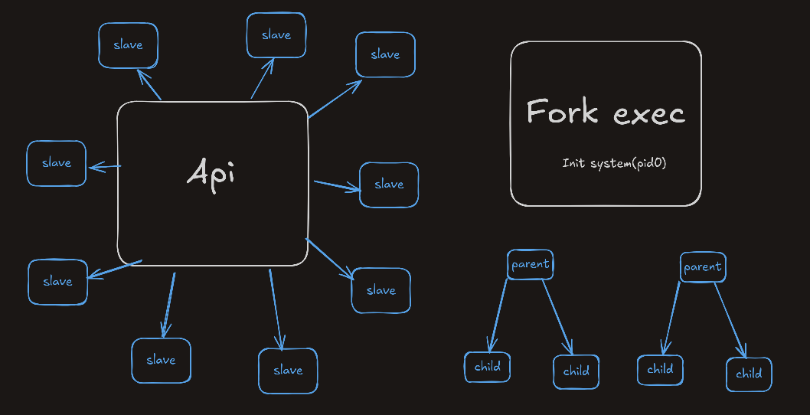
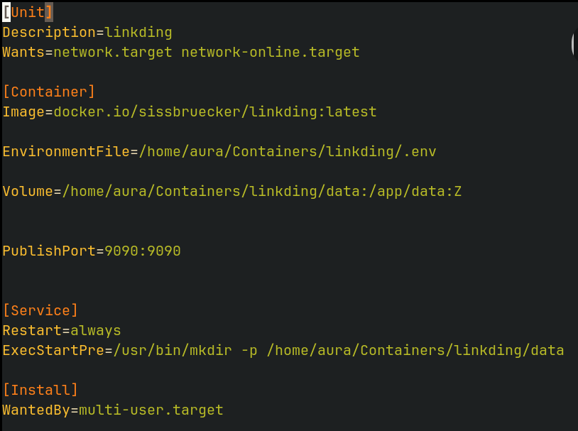
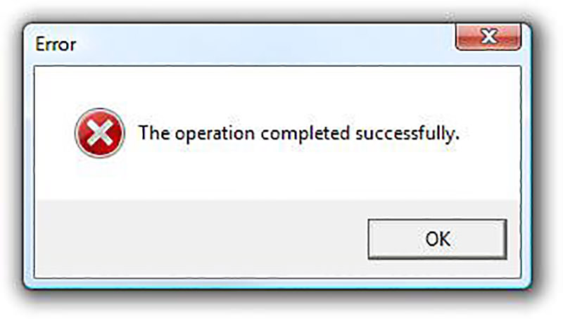

Podman’s New Way: No More generate systemd
Most of us don’t spend much time thinking about containerization. We use Docker because it was the first tool we started with, or Podman simply because it came preinstalled on our system.
However, with the recent update to Podman, the previous approach using
podman generate systemd -f
is no longer the preferred way to enable persistant containers.
This shift makes it worth taking a deeper look at the internal differences between these two approaches and how they handle container execution and service management.
Instead of manually managing containers, we now have a systemd-native approach that integrates containers directly as services.
API vs Fork-Exec

One fundamental difference between Docker and Podman is how they operate at a low level.
Docker is built around a monolithic daemon (dockerd) that acts as a central controller for all containers.
This means:
- If
dockerdfails, all containers stop working. - It requires root privileges, posing potential security risks.
- It does not align with the traditional Unix process model.
In contrast, Podman follows the fork-exec model, which is closer to how Linux naturally runs processes. Instead of relying on a daemon, it launches containers as individual processes.
This means:
- Each container is independent, with no single point of failure.
- Containers can be managed like normal processes, making integration with
systemdmuch easier.
This brings us to Podman’s systemd integration where containers can now be defined using .container files instead of manually written service files.
The .container File Format & How to Use It
Instead of manually writing systemd service files for containers, we now use .container files.
These files allow us to define how a container should be managed as a systemd service, making it easier to start, stop, and restart containers without dealing with complex systemd configurations.
By default, .container files are stored in:
- System-wide containers:
/etc/containers/systemd/ - User-specific containers:
$HOME/.config/containers/systemd/
To learn more, you can check the manual:
Example .container File

Here's a quick example of an .container file for running Nginx as a service:
[Unit]
Description=Example Quadlet Container
Requires=network-online.target
After=network-online.target
[Container]
Image=docker.io/library/nginx:latest
PublishPort=8080:80
# Remember about :Z (to properly set the SELinux context on the host)
Volume=/srv/nginx/html:/usr/share/nginx/html:Z
Volume=/srv/nginx/conf:/etc/nginx/conf.d:Z
User=1000
Environment=NGINX_HOST=localhost
Environment=NGINX_PORT=8080
[Service]
ExecStartPre=-/usr/bin/podman pull docker.io/library/nginx:latest
Restart=always
TimeoutStartSec=30
[Install]
WantedBy=default.target
Understanding the Sections
This setup ensures that:
- The service waits for the network before starting.
- It pulls the latest Nginx image before running (ignoring failures with
-). - It automatically restarts on failure.
- It starts on boot because of the
[Install]section.
To enable and start the service:
Verifying Your Setup
To check if everything is correctly formatted, run:
This will validate your.container files and generate the expected systemd service output.
Enabling & Running Containers as Services
Containers work as services, so they must have an [Install] section if you want them to start on boot. Otherwise, enabling them will fail with:
Failed to enable unit: Unit xyz is transient or generated.
If the [Install] section is missing, you can still manually start the service, but it won’t persist across reboots.
Linger Option in Systemd
By default, user services managed by systemd only run while the user is logged in.
However, Docker containers are persistent, meaning they run even when no users are logged in.
To check if lingering is enabled for a user:
If it outputsLinger=no, user services will not persist after logout.
To enable lingering (allow user services to run after logout):
This ensures that containers run persistently without requiring an active session.Common Errors & Fixes

1. "Failed to Enable Unit" Error
If you get:
Failed to enable unit: Unit xyz is transient or generated. It means your
.containerfile is missing an[Install]section.
Fix: Add this to your .container file:
2. "Failed to Connect to D-Bus" Error
If you see:
Failed to connect to D-Bus. It means
systemctl --useris running without an active session.
Fix:
- Log in via TTY terminal (Alt + F6)
- Log out and back in through your login manager
- Use SSH (if sshd is running):
Or even better as i recently find out on stackexchange
# You avoiding mannualy creating a session with
# machinectl shell root@.host
sudo systemctl --user -M user1@ status myunit.service
Conclusion
The .container format makes managing containers with systemd much simpler and more reliable. Instead of manually defining systemd service files, we now have a more structured, declarative approach.